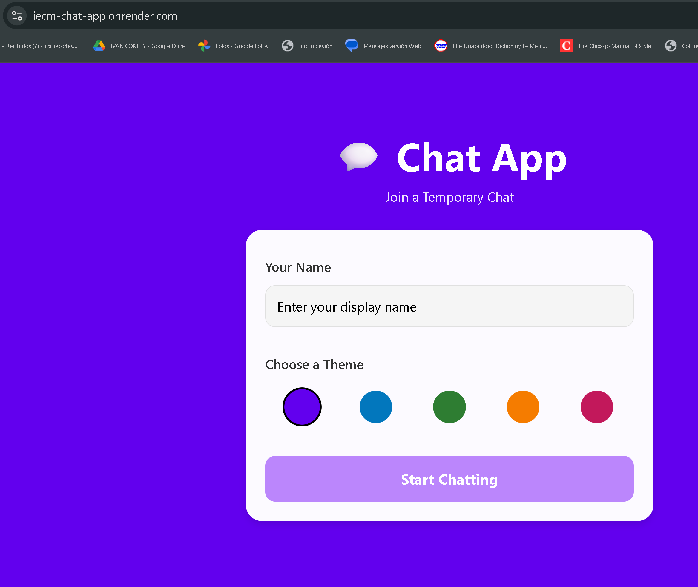
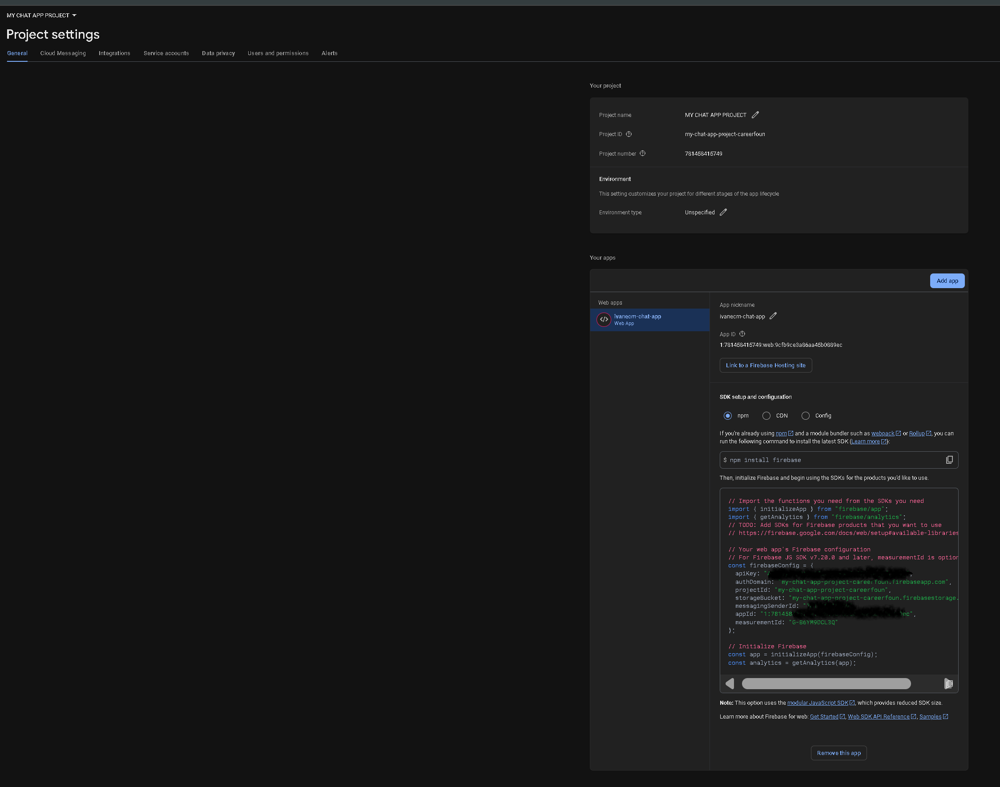
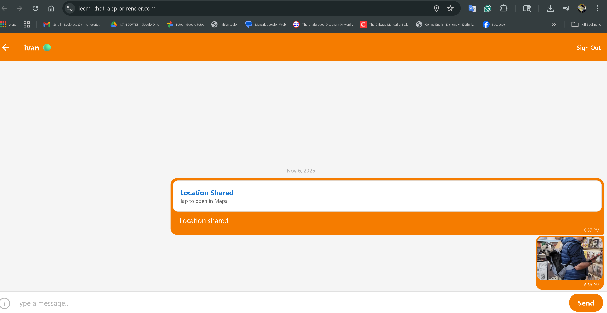

Chat App
A Case Study in Cross-Platform Mobile Development
Project Pitch:
The objective of this project was to build a cross-platform mobile chat application for iOS and Android. As the sole developer, I was responsible for the entire build, from setting up the environment to integrating a real-time backend. The challenge was to create a seamless user experience, including real-time messaging, image sharing, and location sharing. This project showcases my skills in mobile development using React Native and backend-as-a-service integration with Google Firebase.
My Role
Sole Developer
Responsible for mobile UI/UX, Firebase integration, and native feature access.
Duration
~6 Weeks
(April 2025 – May 2025)
Tech Stack
- React Native
- Expo
- Google Firebase (Firestore)
- Google Firebase (Authentication)
- GiftedChat
- React Navigation
The Process & Challenges
Building a mobile app presented a new set of challenges, from managing a real-time data flow to accessing native device features like the camera and GPS.
Challenge 1: Backend: Implementing Real-Time Data Flow
Problem: A chat app's core requirement is real-time communication. This requires a backend that can push data to clients instantly, rather than relying on the user pulling to refresh.
Solution: I integrated Google Firebase as the backend-as-a-service (BaaS). I used Firebase Authentication to manage user login and Cloud Firestore as the real-time NoSQL database. By setting up a listener on the Firestore collection, the app automatically updates with new messages in real-time, providing a modern chat experience.
Visual Proof: Real-Time Firestore Listener

Challenge 2: UI/UX: Building a Native Chat Interface
Problem: Building a chat UI from scratch (bubbles, input fields, avatars) is complex. The app also needed to navigate between a "welcome" screen and the "chat" screen.
Solution: To create a professional and functional chat interface, I implemented the GiftedChat library, which provides a complete, customizable chat UI "out of the box". For navigation, I used React Navigation to create a stack navigator, allowing the user to enter their name and choose a background color before seamlessly transitioning to the main chat room.
Visual Proof: App Navigation & UI
Challenge 3: Device Integration: Accessing Native Features
Problem: The app needed to go beyond text and access native device features like the camera, photo library, and location services.
Solution: Using Expo's APIs, I integrated functionality to request user permissions for device features. I then implemented action buttons within the chat input to allow users to take a photo, select an image from their library, or share their current location. These attachments were stored in Firebase and rendered directly in the chat window.
Visual Proof: Native Feature Integration

The Final Solution
The result is a fully functional, cross-platform mobile chat application. It provides real-time, authenticated messaging, along with image and location sharing. The use of React Native and Expo allowed for a single codebase to target both iOS and Android effectively.
Key Learnings & Future Steps
Key Learnings
This project was my introduction to mobile development and the power of React Native. It demonstrated the efficiency of using a BaaS like Firebase to handle complex backend requirements (real-time data, auth), allowing me to focus on the frontend user experience.
Future Steps
The next steps are to scale the app's features:
- Implement multiple chat rooms
- Add user "typing..." indicators
- Store images in Firebase Storage for performance
- Add "online/offline" presence status